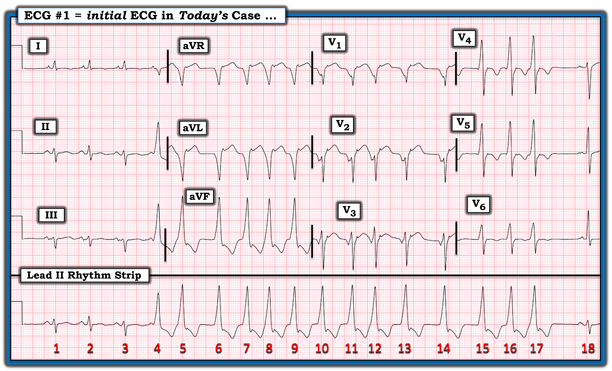
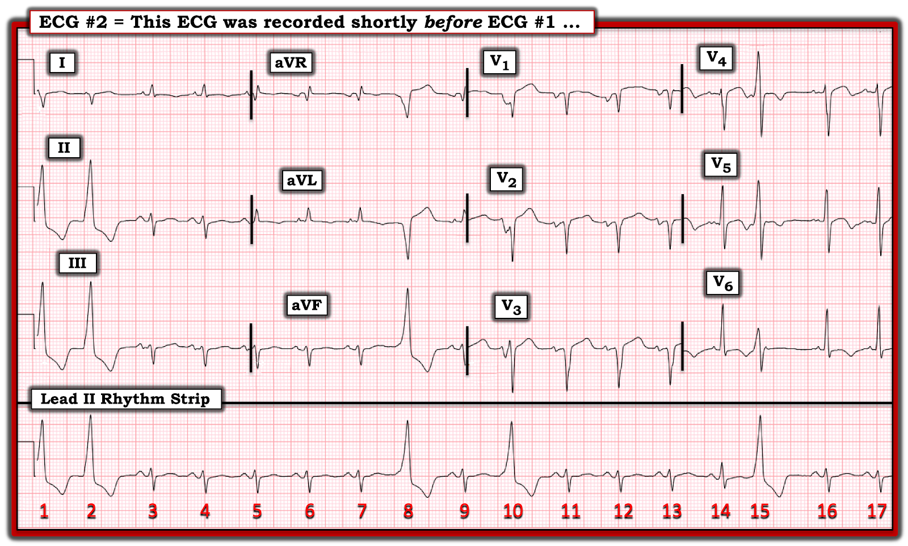
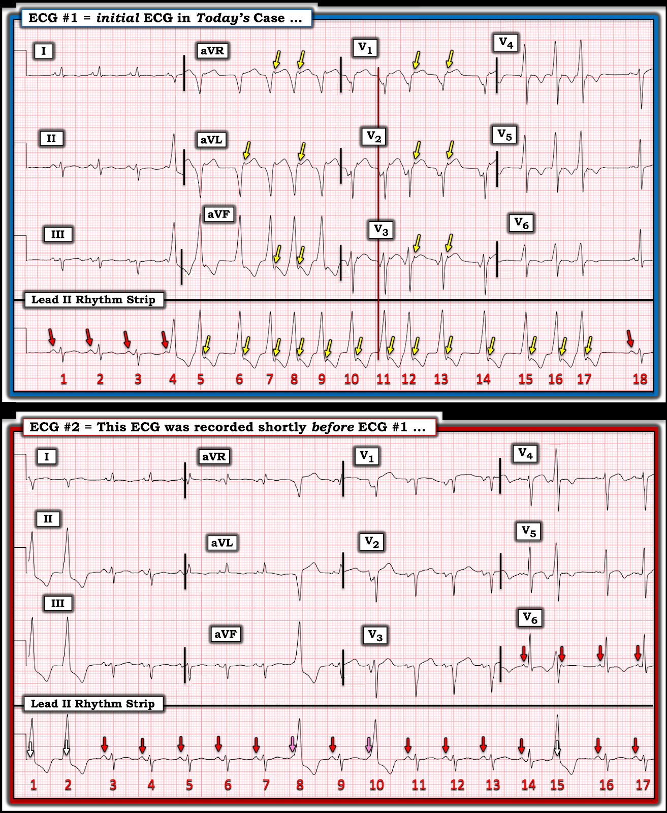
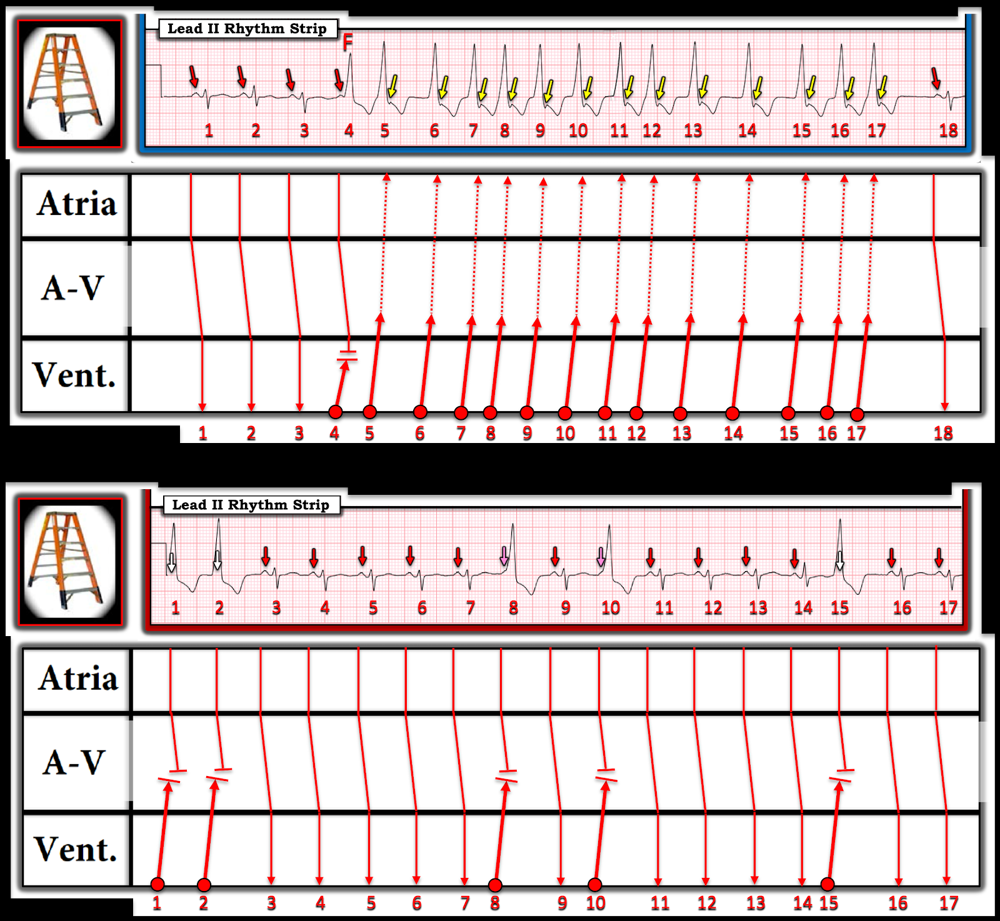

ECG Blog #417 — AFib kèm dẫn truyền lệch hướng?
Điện tâm đồ ở Hình 1 được ghi từ một người đàn ông trung niên trước đó khỏe mạnh — đến khoa cấp cứu ED (Emergency Department) vì khó thở.
CÂU HỎI:
- BẠN sẽ đọc như thế nào điện tâm đồ ở Hình 1?
- Với tính không đều hoàn toàn của các nhát #4 đến 17 — Đây có phải là một loạt AFib (Atrial Fibrillation — rung nhĩ) kèm dẫn truyền lệch hướng (aberrant conduction) không?


Suy nghĩ ban đầu về điện tâm đồ ở Hình 1:
Điện tâm đồ hôm nay khó vì mặc dù hình dạng QRS thay đổi rõ rệt bắt đầu từ nhát #4 — VT (Ventricular Tachycardia — nhịp nhanh thất) đơn dạng thường là một nhịp đều (nếu không thì ít ra cũng khá đều). Điều này đặt ra câu hỏi liệu các nhát #4 đến 17 có thể là một loạt AFib kèm dẫn truyền lệch hướng hay không?
- GỢI Ý: MẤU CHỐT để đọc nhịp hôm nay nằm ở việc đánh giá hoạt động nhĩ. BẠN thấy gì?
=====================================
Bản ghi trước đó có giúp ích không?
Một điện tâm đồ khác đã được ghi trên bệnh nhân hôm nay ít lâu trước điện tâm đồ ở Hình 1.
- Bản ghi trước đó này (trình bày ở Hình 2) có giúp xác định căn nguyên của loạt nhát rộng không đều ở Hình 1 không?


=====================================
Cách tiếp cận của tôi với nhịp hôm nay:
Hoạt động nhĩ có hiện diện đi kèm mỗi nhát trong cả hai bản ghi hôm nay. Hoạt động nhĩ này cung cấp manh mối MẤU CHỐT để xác định căn nguyên của các nhát rộng.
- Dùng compa đo (calipers) giúp quá trình này dễ dàng hơn.
- GỢI Ý: Chúng ta cần tìm sóng P không chỉ ở phía trước các nhát rộng — mà còn trong và ngay sau các phức bộ QRS rộng để hoàn tất việc tìm kiếm hoạt động nhĩ.
CÂU HỎI:
Tôi đã đặt cả hai bản ghi cạnh nhau ở Hình 3.
- Các mũi tên màu cho câu trả lời như thế nào?


TRẢ LỜI về nhịp hôm nay:
3 nhát đầu tiên ở điện tâm đồ #1 là nhát dẫn truyền từ xoang — với các mũi tên ĐỎ đánh dấu các sóng P xoang đúng lúc.
- Lưu ý rằng sóng P xoang đúng lúc thứ 4 xuất hiện ngay trước nhát rộng thứ 1 trên dải nhịp dài chuyển đạo II ở Hình 3 ( = mũi tên ĐỎ thứ 4 ở điện tâm đồ #1, xuất hiện ngay trước nhát #4).
- Lưu ý thêm rằng có một sóng lệch âm tinh tế ở ngay cuối phức bộ QRS rộng thứ 2 ( = mũi tên VÀNG thứ 1 trên dải nhịp dài chuyển đạo II của điện tâm đồ #1). Mũi tên VÀNG này biểu thị một sóng P ngược dòng.
- Điểm MẤU CHỐT: Các sự kiện trên chứng minh rằng nhát #4 và nhát #5 là PVC (Premature Ventricular Contractions — ngoại tâm thu thất).
Cần nhấn mạnh một số điểm về điện tâm đồ #1:
- Lý do chúng ta biết sóng lệch âm tinh tế ( = mũi tên VÀNG thứ 1 ở điện tâm đồ #1) xuất hiện ở cuối nhát #5 chắc chắn là một sóng P ngược dòng — là vì chúng ta không thấy sóng lệch âm như vậy ở cuối nhát #4. Điều này đúng như dự đoán — vì một sóng P xoang đúng lúc xuất hiện ngay trước nhát #4, làm cho tâm nhĩ trơ với dẫn truyền ngược dòng.
- Điều thú vị là — sóng P ngược dòng (được đánh dấu bằng mũi tên VÀNG) được thấy ở đúng cùng một vị trí (tức là ngay sau phức bộ QRS) của các nhát #6 đến 17.
- Thêm bằng chứng rằng các sóng lệch âm tinh tế ở cuối các nhát rộng thực sự là sóng P ngược dòng — đến từ việc chúng ta có thể thấy các sóng P ngược dòng này ở các chuyển đạo khác trong bản ghi 12 chuyển đạo (= mũi tên VÀNG ở nhiều chuyển đạo khác trong điện tâm đồ #1).
- Quay lại dải nhịp dài chuyển đạo II ở điện tâm đồ #1 — Nhát #17 được theo sau bởi một khoảng ngưng ngắn, sau đó mũi tên ĐỎ thứ 5 trong bản ghi này đánh dấu sự trở lại của nhịp xoang với nhát #18.
- ĐIỂM THEN CHỐT (PEARL) #1: Cực tính của sóng P xuất hiện ngay sau phức bộ QRS giúp phân biệt giữa sóng P xoang, PAC (Premature Atrial Contractions — ngoại tâm thu nhĩ) và sóng P ngược dòng. Sóng P xoang phải dương ở chuyển đạo II. Chúng thường (dù không phải luôn luôn) âm ở chuyển đạo V1. PAC có thể hoặc dương hoặc âm. Nhưng sóng P ngược dòng phải âm ở các chuyển đạo thành dưới (II,III,aVF) — và dương ở chuyển đạo aVR và V1 (như thấy ở các mũi tên VÀNG trong điện tâm đồ #1).
- ĐIỂM THEN CHỐT (PEARL) #2: Việc sóng P xoang thứ 4 ở điện tâm đồ #1, như trình bày ở Hình 3 ( = mũi tên ĐỎ thứ 4 trên dải nhịp chuyển đạo dài), hoàn toàn đúng lúc, và được theo sau bởi một nhát rộng có khoảng PR đứng trước quá ngắn để dẫn truyền — chứng minh rằng nhát #4 là một PVC. (Vì khoảng PR trước nhát #4 quá ngắn để dẫn truyền bình thường — điều này có nghĩa là nhát #4 phải xuất phát, ít nhất một phần, từ dưới nút AV).
- ĐIỂM THEN CHỐT (PEARL) #3: Hình dạng QRS của các nhát rộng #5 đến 17 rất giống hình dạng QRS của nhát #4. Điều này gợi ý mạnh mẽ rằng mặc dù các nhát #4 đến 17 không đều — đây là một loạt VT không đều.
- ĐIỂM THEN CHỐT (PEARL) #4: Nhát #4 là một nhát hỗn hợp (fusion beat). Như đã nêu ở ĐIỂM THEN CHỐT #3 — hình dạng QRS của nhát #4 trông rất giống (nhưng không giống hệt) hình dạng QRS của các nhát #5-17 (tức là sóng R của nhát #4 hơi thấp hơn sóng R của mỗi nhát trong 13 nhát rộng theo sau nó). Để chứng minh “hỗn hợp” — phải có một lý do hợp lý để một nhát biểu hiện hình dạng trung gian giữa nhát dẫn truyền từ xoang và nhát thất thuần túy — và lý do hợp lý này có hiện diện ở điện tâm đồ #1 — vì sóng P xoang đúng lúc ứng với mũi tên ĐỎ thứ 4 (thấy ngay trước nhát #4) chỉ có một khoảnh khắc rất ngắn để dẫn truyền xuống tâm thất trước khi nhát thất #4 phát sinh. (Để biết thêm về nhát hỗn hợp — Xem ECG Blog #128 và Blog #129).
- Điểm MẤU CHỐT Lâm sàng: Việc phát hiện một nhát hỗn hợp — cung cấp thêm bằng chứng rằng không chỉ nhát #4 ở điện tâm đồ #1 có căn nguyên ít nhất một phần từ thất — mà còn, rằng mỗi nhát rộng trông giống nhát #4 ( = các nhát #5-17) cũng có căn nguyên từ thất, nhờ đó chúng ta đã chứng minh rằng các nhát #4 đến 17 là một loạt VT không đều! (Xem ECG Blog #133).
ĐIỂM THEN CHỐT (PEARL) #5: Một trong những lý do chính tôi chọn ca hôm nay là để nhấn mạnh rằng mặc dù VT đơn dạng thường là một nhịp đều — nó không phải lúc nào cũng là nhịp đều (Xem ECG Media Pearl trong PHẦN BỔ SUNG của bài hôm nay ở bên dưới).
- Phần lớn các trường hợp khi VT đơn dạng không đều — mức độ “không đều” là tối thiểu. Tuy vậy — Ca hôm nay là một ví dụ trong đó chúng ta biết nhịp là VT mặc dù có sự không đều rõ rệt mà chúng ta thấy ở điện tâm đồ #1.
- Lý do phần lớn VT đơn dạng biểu hiện khoảng R-R đều (hoặc ít nhất gần như đều) — là vì nhịp này thường là kết quả của một vòng vào lại ổn định. Có thể có một giai đoạn "khởi động" (warm-up) hoặc "hạ nhiệt" (cool-down) ngắn cho đến khi khoảng R-R đều được thiết lập (trong trường hợp đó tần số tăng dần hoặc giảm dần — hoặc ở đầu hoặc ở cuối của một loạt VT vốn đều).
- Dù vậy — Đôi khi, có thể có hoạt động khởi kích khu trú (focal triggered activity) dẫn đến sự không đều rõ rệt của VT đơn dạng thấy ở điện tâm đồ #1 (Zhang và cs. — Circulation 139:1750-1752, 2019).
- T.B. (P.S.): Lý do chỉ rõ dạng “đơn dạng” của VT là dạng VT thường đều — là vì theo định nghĩa, PMVT (PolyMorphic Ventricular Tachycardia — nhịp nhanh thất đa dạng) là một nhịp VT rất không đều, nhanh chóng dẫn đến mất ổn định huyết động (Xem ECG Blog #231).
=================================
Về điện tâm đồ #2 ở Hình 3:
- Như đã nêu trước đó — bản ghi phía dưới ở Hình 3 được ghi ít lâu trước điện tâm đồ #1. Thông tin bổ sung nào được cung cấp bởi điện tâm đồ #2 — mà không thấy rõ ở điện tâm đồ #1?
TRẢ LỜI:
Ngoài việc xác nhận thêm rằng các nhát rộng trong 2 bản ghi hôm nay có căn nguyên từ thất — điện tâm đồ #2 còn gợi ý về nguyên nhân có thể của nhịp VT hôm nay.
- Ở Hình 3 — Các nhát #1,2; 8, 10 và 15 ở điện tâm đồ #2 là PVC, trong đó nhát #1 và 2 tạo thành một cặp đôi thất ( = 2 PVC liên tiếp). Chúng ta biết cả 5 nhát rộng này đều có căn nguyên từ thất — vì nhịp nhĩ nền vẫn tiếp diễn suốt bản ghi này bất chấp các nhát rộng này (tức là 2 sóng P ở mũi tên HỒNG làm biến dạng nhẹ phần dốc lên ban đầu của sóng R ở nhát #8 và 10 — do đó có khoảng PR quá ngắn để dẫn truyền. 3 sóng P ở mũi tên TRẮNG nằm trong QRS của các nhát rộng #1,2,15 — do đó các sóng P này không thể dẫn truyền).
ĐIỂM THEN CHỐT (PEARL) #6:
12 chuyển đạo thì tốt hơn một!
- Mặc dù chúng ta không thấy bằng chứng nào cho thấy sóng P ở mũi tên TRẮNG bị ẩn bên trong các nhát QRS rộng #1,2 và 15 trên dải nhịp chuyển đạo dài của điện tâm đồ #2 — Chúng ta lại thấy một khía dương đúng lúc chính xác ở chuyển đạo V6 (mũi tên ĐỎ thứ 2 ở chuyển đạo này). Điều này xác nhận rằng các sóng P đều vẫn tiếp diễn suốt nhịp hôm nay.
- Nhận xét trên minh họa khái niệm về việc sử dụng các chuyển đạo đồng thời có thể cung cấp thông tin mà một chuyển đạo đơn lẻ không cho thấy (trong trường hợp này — tìm bằng chứng hoạt động nhĩ không chỉ trên dải nhịp chuyển đạo dài — mà còn ở các chuyển đạo ghi đồng thời V4,V5,V6).
ĐIỂM THEN CHỐT (PEARL) #7:
Phần lớn các trường hợp, đánh giá hình dạng sóng ST-T của các nhát thất sẽ không phải là chỉ điểm đáng tin cậy của một biến cố gần đây hay cấp tính. Vì vậy — Chúng ta chỉ có thể đánh giá đáng tin cậy hình dạng sóng ST-T để tìm thay đổi cấp tính ở chuyển đạo I,II,III của điện tâm đồ #1, vì đây là 3 chuyển đạo duy nhất mà chúng ta thấy sóng ST-T của các nhát dẫn truyền từ xoang. 3 chuyển đạo này gợi ý trục lệch trái phù hợp với LAHB (Left Anterior HemiBlock — blốc phân nhánh trái trước) ở các nhát dẫn truyền từ xoang #1,2,3 — kèm sóng ST-T dẹt không đặc hiệu, nhưng không có thay đổi cấp tính.
- Trái với việc chúng ta không thể đánh giá tối ưu điện tâm đồ #1 về thay đổi thiếu máu cục bộ — các chuyển đạo trước ngực ở điện tâm đồ #2 cho thấy rõ những thay đổi đáng ngờ của một biến cố cấp tính gần đây ở các nhát dẫn truyền từ xoang #11,12,13 (biểu hiện đoạn khởi đầu ST thẳng đuỗn bất thường ở các chuyển đạo thành trước V2,V3) — và — ở các nhát dẫn truyền từ xoang #14 và 16 (cho thấy ST dạng vòm (coving) kèm sóng T đảo ngược đối xứng ở chuyển đạo V4,V5,V6 — cũng như ST chênh lên tồn dư mức độ nhẹ ở chuyển đạo V4).
- NHẬN ĐỊNH LÂM SÀNG: Với mức ST chênh lên tối thiểu ở các chuyển đạo trước ngực của điện tâm đồ #2 — kèm sóng T đảo ngược đối xứng ở chuyển đạo V4,V5,V6 — tôi nghi ngờ sóng T tái tưới máu sau khi động mạch vành LAD (Left Anterior Descending — động mạch liên thất trước) bị tắc gần đây là nguyên nhân gây ra VT không đều và các PVC mà chúng ta thấy trong 2 điện tâm đồ hôm nay.
=================================
Minh họa bằng Giản đồ bậc thang:
Để giúp hiểu rõ cơ chế rối loạn nhịp hôm nay — tôi đã thêm giản đồ bậc thang (laddergram) cho điện tâm đồ #1 và điện tâm đồ #2 ở Hình 4.
- Sau 3 nhát dẫn truyền từ xoang — nhát #4 ở điện tâm đồ #1 (giản đồ bậc thang TRÊN) là một nhát hỗn hợp ("F"), sau đó thấy một loạt VT không đều ( = các nhát #5 đến 17). Sau một khoảng ngưng ngắn (sau ngoại tâm thu) — nhịp xoang trở lại với nhát #18.
- Các mũi tên VÀNG ở điện tâm đồ #1 biểu thị sóng P ngược dòng được dẫn truyền ngược về tâm nhĩ.
- Lưu ý rằng tôi vẽ điểm hỗn hợp của nhát #4 ở vị trí tương đối cao trong tâm thất. Vì hình dạng QRS của nhát #4 rất giống hình dạng QRS trong loạt VT (khác biệt chính về hình dạng là biên độ sóng R của nhát hỗn hợp hơi thấp hơn) — xung động thất góp phần tạo nên nhát #4 đi qua phần lớn tâm thất trước khi gặp phần đóng góp dẫn truyền từ xoang vào nhát #4.
- Ở điện tâm đồ #2 (giản đồ bậc thang DƯỚI) — các nhát #1,2; 8, 10 và 15 là PVC. 5 xung động thất này chỉ dẫn truyền ngược một đoạn ngắn (tức là vào Tầng Nút AV) trước khi gặp các xung động dẫn truyền từ xoang đi xuống, ngăn không cho dẫn truyền ngược dòng của các PVC này đến được tâm nhĩ.


==========================================
Lời cảm ơn: Xin cảm ơn Seung-Lyul Shin (từ Incheon, Hàn Quốc) đã cung cấp ca bệnh và bản ghi này.
==========================================

==============================
Các bài ECG Blog Liên quan đến ca hôm nay:
- ECG Blog #185 — Trình bày Hệ thống Đọc Nhịp của tôi, sử dụng Cách tiếp cận Ps, Qs & 3R.
- ECG Blog #198 — VT có thể không đều không?
- ECG Blog #403 (ECG Video) — Ca nhịp WCT đều.
- ECG Blog #128 và ECG Blog #129 — Trình bày khái niệm nhát hỗn hợp (fusion).
- ECG Blog #393 — Ca có nhiều nhát hỗn hợp.
- ECG Blog #133 — Phân ly nhĩ thất, nhát hỗn hợp chứng minh VT ...
- ECG Blog #382 — Một ca khác trong đó nhát hỗn hợp xác nhận PVC.
- ECG Blog #204 — Trình bày chẩn đoán điện tâm đồ các blốc nhánh (RBBB/LBBB/IVCD).
- ECG Blog #203 — Trình bày chẩn đoán điện tâm đồ về trục và các blốc phân nhánh. Để ôn lại hình dạng QRS trong các blốc hai phân nhánh (RBBB/LAHB; RBBB/LPHB) — Xem Video Pearl trong bài blog này.
- ECG Blog #301 — Trình bày một ca WCT có nguồn gốc trên thất! (với RẤT NHIỀU nội dung về dẫn truyền lệch hướng).
- ECG Blog #38 và Blog #85 — Ôn tập về VT phân nhánh (fascicular VT).
- ECG Blog #278 — Một ca khác về nhịp WCT đều ở người trưởng thành trẻ tuổi.
- ECG Blog #35 — Ôn tập về VT đường ra thất phải (RVOT).
- ECG Blog #42 — Tổng quan toàn diện các tiêu chuẩn phân biệt VT với dẫn truyền lệch hướng.

PHẦN BỔ SUNG (ngày 17 tháng 2 năm 2024):

ECG Media PEARL #15 (5 phút âm thanh) — Liệu VT đơn dạng có phải là một nhịp đều? — chú ý đến 2 điều cảnh báo nhấn mạnh rằng: i) AFib nhanh có thể trông đều; và, ii) VT đơn dạng không phải lúc nào cũng đều hoàn toàn.